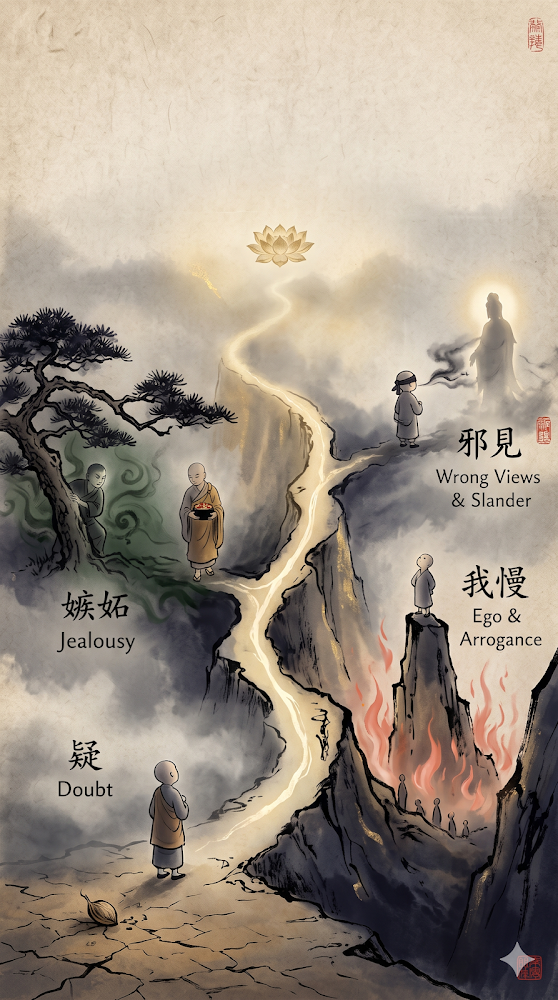

<!doctype html>
<html lang="vi">
<head>
<meta charset="utf-8">
<meta name="viewport" content="width=device-width, initial-scale=1">
<title>四種法離菩薩行 - TỨ CHỦNG PHÁP LY BỒ TÁT HẠNH · Giải Nghĩa Từ Vựng</title>
<link rel="canonical" href="https://giainghiatuvung.blogspot.com/2026/10/tu-chung-phap-ly-bo-tat-hanh.html">
<link rel="stylesheet" href="../../assets/kieu.css">
<script src="../../assets/do-luong.js"></script>
</head>
<body class="trang-bai">
<header class="dau-trang">
  <a class="ten-site" href="../../index.html"><span lang="zh-Hant">冩漢字佛經</span> Chép Kinh Chữ Hán</a>
  <nav><a href="../../muc-luc.html">Mục lục</a><a href="../index.html">Từ vựng</a></nav>
</header>
<main class="bai">
  <p class="duong-dan"><a href="../index.html">Từ vựng</a> / <a href="../index.html#chu-T">T</a></p>
  <h1><span class="han" lang="zh-Hant">四種法離菩薩行</span> <span class="hv">TỨ CHỦNG PHÁP LY BỒ TÁT HẠNH</span></h1>
  <p class="thong-tin">Đăng ngày 21/10/2026 · <a href="https://giainghiatuvung.blogspot.com/2026/10/tu-chung-phap-ly-bo-tat-hanh.html" rel="noopener">Xem bài trên blog gốc</a></p>
  <article class="noi-dung tu-vung-bai">
<p><span>(Bốn pháp khiến xa lìa hạnh Bồ-tát)</span></p><p><span>謂眾生若行下列四種法，則離於菩薩之行。</span></p><p><span>Nghĩa là chúng sanh nếu thực hành 04 pháp kể dưới đây thì rời xa hạnh Bồ-tát.</span></p><p><span>(1) 疑惑佛法，謂人宿無善種，於佛法心生疑惑而不愛樂。</span></p><p><span>01 là, nghi hoặc Phật pháp: nghĩa là người đời trước không gieo hạt giống lành nên đối với Phật pháp thời tâm thường sanh nghi ngờ mà chẳng ưa mến.</span></p><p><span>(2) 我見貢高，謂人妄執我見而心懷貢高，瞋恚一切眾生。</span></p><p><span>02 là, ngã kiến cống cao: nghĩa là người vọng chấp ngã kiến, trong lòng ôm mang cống cao, sân khuể đối với tất cả chúng sanh. </span></p><p><span>(3) 嫉他利養，謂人見他人得利養，妄起貪愛而復憎嫉。</span></p><p><span>03 là, đố kỵ với lợi dưỡng của người khác: nghĩa là người thấy kẻ khác được lợi dưỡng, vọng khởi tham ái, rồi lại sanh lòng ghen ghét.</span></p><p><span>(4) 不敬信，謂人心著邪見，於佛菩薩不生敬信亦不稱讚，而復毀謗。</span></p><p><span>04 là, chẳng kính tín: nghĩa là người có tâm chấp trước tà kiến, đối với Phật &amp; Bồ-tát chẳng sanh kính tín cũng chẳng tán thán, lại còn phỉ báng. </span></p><p><span>p2324</span></p><p><span>Trang 2324</span></p><p><span>***佛光大辭典 </span></p><p><span>Phật Quang Đại Từ Điển</span></p><p><span><a href="https://etext.fgs.org.tw/sutra_02.aspx" rel="noopener"><u><span>https://etext.fgs.org.tw/sutra_02.aspx</span></u></a></span></p><div><a href="../../anh/aa7c2922a64707ca.png" rel="noopener"></a></div><br><p><br></p><p></p>
  </article>
  <nav class="dieu-huong" aria-label="Mục trước và mục sau"><a class="truoc" href="2026-10-tu-bat-kha-khinh.html"><span class="nhan">Mục trước</span><span class="han" lang="zh-Hant">四不可輕</span> <span class="hv">TỨ BẤT KHẢ KHINH</span></a><a class="sau" href="2026-10-yem-ly-tu-cu.html"><span class="nhan">Mục sau</span><span class="han" lang="zh-Hant">厭離四句</span> <span class="hv">YẾM LY TỨ CÚ</span></a></nav>
</main>
<footer class="chan-trang">
  <p>Bản lưu dự phòng của blog <span lang="zh-Hant">詞彙釋義</span> Giải Nghĩa Từ Vựng, cập nhật 30/10/2026.</p>
</footer>
</body>
</html>
